About us : GNPS, was established in the year 1975 by Late Pant Ratan Shiromani Sardar Joga singh ji. It began its humble journey in the field of education 41 years ago and has now become a significant landmark of learning in this remote district of Bidar. Education is considered to be the core instrument of human development and its aim is to promote excellence in all spheres of life of the children. GNPS provides a platform to the students to vent their expressions and ignite their creative minds to explore, expand and take wingless flights.
- Vision: "To ensure that all students achieve intellectual & personal excellence through holistic educational approaches and envision themselves as global leaders"
- Mission: "GNPS will be a dynamic & motivating educational environment that moulds self-reliant learners of all ages and prepares students to lead the global market with confidence"
- Moto: "Our school's motto is "Take on the world!!" As we always encourage our students to dream big, we wish to instil the quality of aiming high in our children's minds."
To Know about [QtPi Robotics] (https://www.qtpi.in/)
In the Annual Science fest ‘Eduvista' which is a 2 day event, our young reporters Nidha, Rudrani, seema have reported about the divergent projects done by the students. In this event many students came up with projects from distinct backgrounds. One of the attractions in this event is "NAMMA HALLI" which means Our village, where you will be seeing the village environment. Students had put tremendous effort in this event and made it successful which received a huge appreciation from Management, teachers and Parents.
Students came up with distinct innovations for almost all the problems faced by the people day to day using Robotics.Parents felt overwhelmed by looking at these projects displayed by their kids.
Students had put up stalls to display various innovations developed by them and explained about their innovations to the parents. Parents also showed equal enthusiasm in the exhibition of their innovative projects. Thus this Parent Teacher meeting turned out a family bonding event as both Parent and children sat together to build Robots.

In the INSPIRE Awards - MANAK 3 Project ideas of students from GURU NANAK PUBLIC SCHOOL (MAIN BRANCH) was shortlisted and selected at District Level Project Exhibition Competition and given a reward of 10,000/- INR.
Students who got selected :
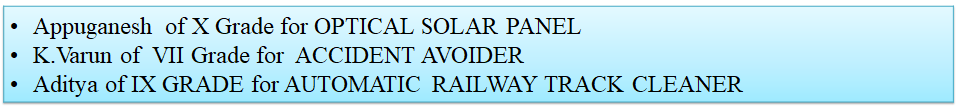
And Among these ideas, One Project(Optical solar Panel) from Guru Nanak Public School (Main Branch) was shortlisted for State Level Project Exhibition Competition.

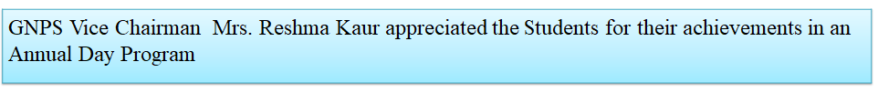
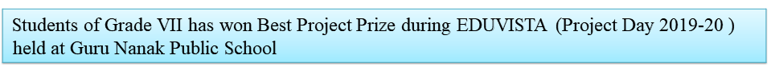
- Project : Portable Washing Machine

BADGE COMPETITION
In the month of July 2019, a badge designing competition was conducted by QtPi on the theme of QtStar Team. The competition was conducted across all QtSchools and 10 students from Guru Nanak Public School were selected under the top 40 winners and awarded with a cash prize of ₹500 each. We congratulate the winners who made a tremendous effort in making the badge designs.
The Winners are
Divya VII A
|
Kumua .A.D VII A
|
Maya devi VII A
|
Sanjana C VII B
|
Soumya Patil IX E
|
Faiza Shairfain Khanam VI B
|
Mahesh VII G
|
Abhishek T VIII C
|
Amulya Magore VII D
|
MD Farees Ahmed
|


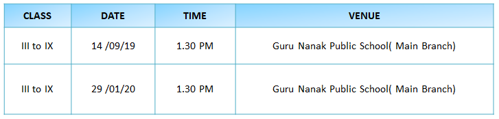
Students had put up stalls to display various innovations developed by them and explained about their innovations to the parents.
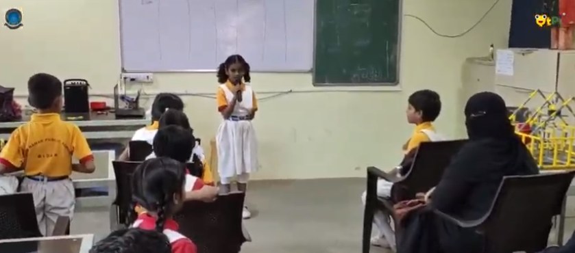
Parents also showed equal enthusiasm in the exhibition of their innovative projects. Thus this Parent Teacher meeting turned out a family bonding event as both Parent and children sat together to build Robots.
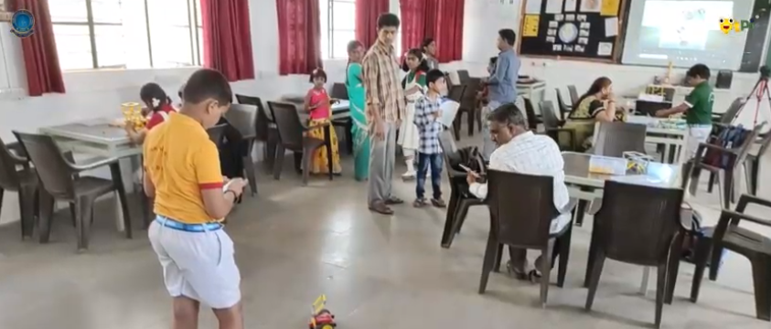
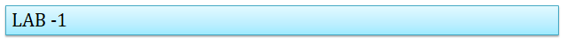
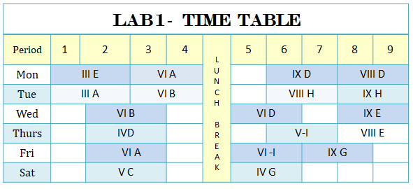
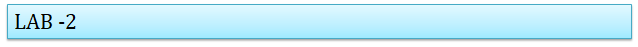
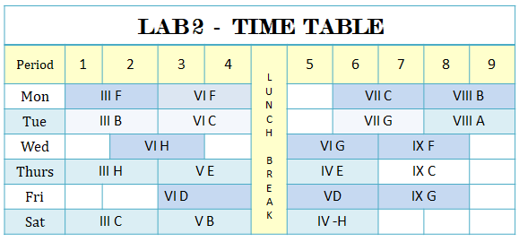
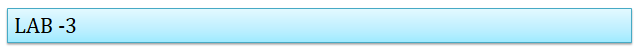
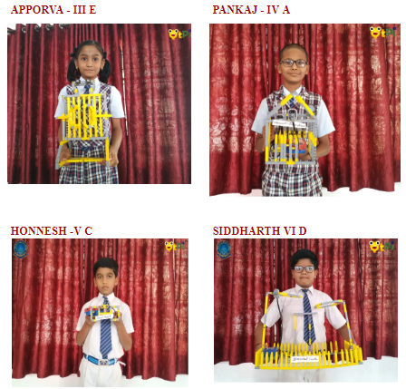
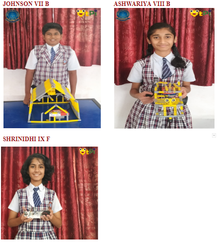


In the month of April there was a 1 month summer camp for grade 3 and 4 . And on 4th may Parent's and Guest were invited for the closing ceremony of summer camp in which students participated in a drama exhibiting project they have learned throughout the camp.

As mark of 85th Birthday Celebration of Late Panth Ratan Shiromani Joga Singhji Shaheed on 26th Dec QtSchool Lab of Guru Nanak Public School thanks for being a part of this event and doing 200 sapling as Mrs. Reshma Kaur, Vice Chairperson target for her sapling was 5550 And on this special eve we also thank all the Dignitaries Sir Balbir sighn ji (President ), Mrs Reshma kaur (Vice Chairperson) ; Mrs. Pawan Priya(Principal); Mrs. Aparanjini(Vice Principal); Mr. Amjad Ali(Principal) for the support!
|
|


On the occasion of Independence Day, students came up with innovative ideas and presented their ideas to parents and school management by installing stalls. Parents as well as teachers oversaw the projects and appreciated students for their effort and creativity.
|
|


In the Annual Science fest ‘Eduvista' which is a 2 day event, many students came up with projects from distinct backgrounds and they had put tremendous effort in this event and made it successful which received a huge appreciation from Management, teachers and Parents
These are few of the stunning and Innovative projects developed by the students which pleased Parents, Management of GNPS and Guests of Honour.


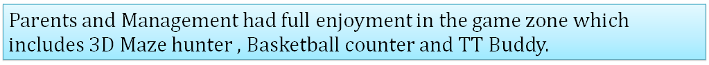
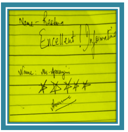

QT Creative Students with their Designs
QT Students presenting Breadboard Project at GNPS
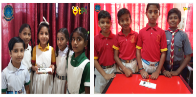
QT Students with Automatic Railway Gate and Voice Controlled colour Light Projects

Mrs Reshma Kaur Mam Vice Chairperson of Guru Nanak Public School sharing her feedback after enrollment of Robotics in their School
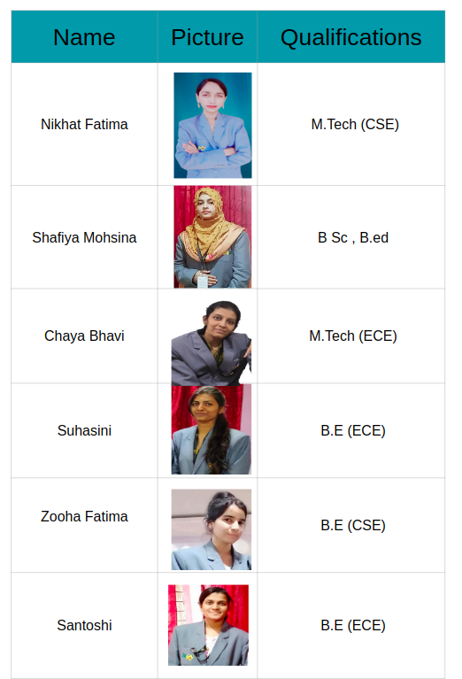

GURU NANAK PUBLIC SCHOOL
 Near Nehru Stadium,Bidar – 585 401.
Near Nehru Stadium,Bidar – 585 401.
Karnataka – INDIA.
 Phone : 08482-225282, 222592
Phone : 08482-225282, 222592
 Email : gnpsmain@rediffmail.com
Email : gnpsmain@rediffmail.com
 Website : www.gnpsbidar.org
Website : www.gnpsbidar.org
|
|
|